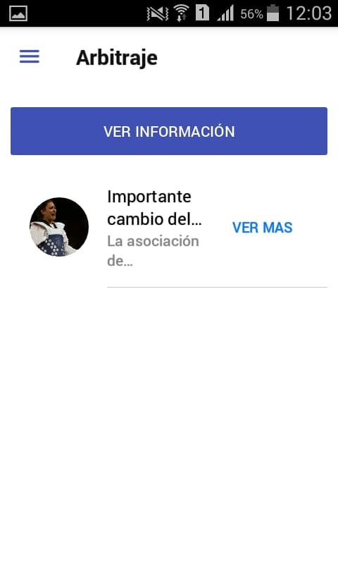
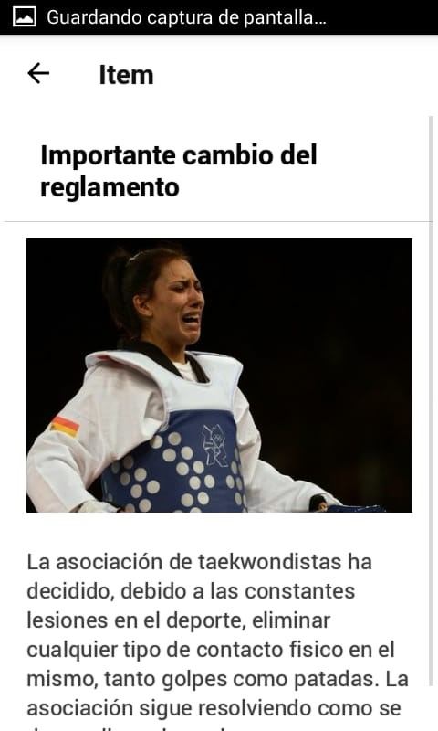
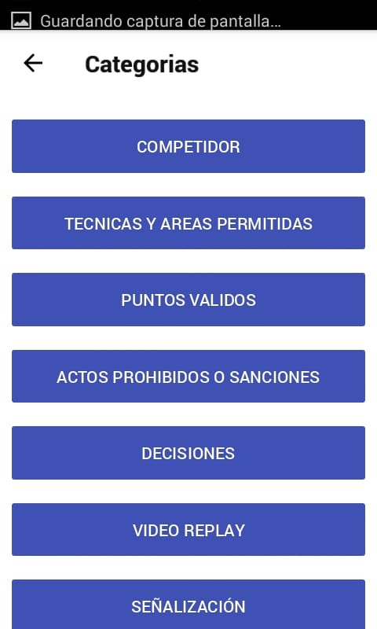
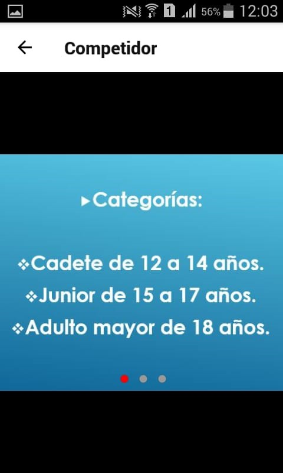

En esta pantalla, podemos visualizar las distintas novedades relacionadas con el Arbitraje, cambios en el reglamento o diferentes novedades.
Presionando en cualquiera de las novedades podremos visualizarla de la misma manera que en la pantalla de Novedades.
Además, si clickeamos el botón de “Ver Información”, podremos visualizar la siguiente pantalla:
Tendremos distintas opciones relacionadas al arbitraje, donde cada una tiene información relacionada.
Si pulsamos en “Competidor” podremos visualizar un conjunto de imágenes diseñadas para entender todo lo relacionado a las normas que un competidor de taekwondo tiene que cumplir.
